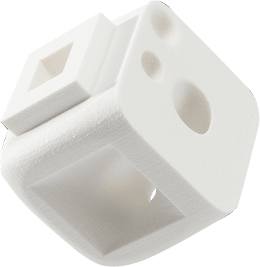

Our 4 technologies, one workshop
Each technology is a complete ecosystem: a process, its machines, its materials. 11 machines and 29 materials, organised so you can find the right combination at a glance.
Solid nylon part, fine grain, free-form shapes
2 machines · 10 materials↓Fused filament fabricationFDMFrom multi-colour PLA to high-performance PEEK
5 machines · 12 materials↓Stereolithography (resin)SLASmooth, ultra-detailed part
1 machine↓Computer numerical control machiningCNCSolid part, precise dimensions, fine surface finish
1 machine · 7 materials↓Which technology for which need?
SLS
A laser melts nylon powder, layer after layer. The surrounding powder supports the part: no supports at all.
- Functional and mechanical parts
- Complex shapes, internal channels, integrated hinges
- Small batches: dozens of parts per cycle
- Parts resistant to impact and wear





FDM
A nozzle lays down molten plastic filament, line by line, like a computer-controlled 3D pen.
- Fast, low-cost prototypes
- Huge choice of materials, from PLA to PEEK and ULTEM
- Large parts (Modix Big Meter)
- Multi-colour and multi-material parts

Bambu Lab H2C
Multi-material printing
View the sheet →
Bambu Lab X1C
3D printing for series
View the sheet →
Prusa Core One
Rapid industrial prototyping
View the sheet →
Modix Big Meter
Large-format 3D printing
View the sheet →
INTAMSYS Funmat HT
Industrial materials
View the sheet →


SLA
A liquid resin cures under UV light, layer by layer, for maximum detail.
- Very fine details
- Smooth surfaces straight off the machine
- Scale models, figurines, appearance prototypes
- Masters for moulding

CNC
A cutter removes material from a solid block: the part is machined from solid, in metal or technical plastic.
- Metal parts
- Precise fits and bores
- Mechanical parts subject to wear or heat
- Plates, brackets, small batches


Also: 3D scanning & laser engraving


A part to make?
Send your 3D file or describe what you need: instant quote with a file, custom quote within 24 h.